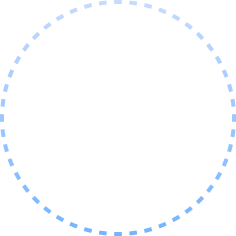

궁금한 카드를 터치해 보세요.
3장 확인하면 미션 완료!

01
02
03
이용자격01
공공기관 정보화 담당자
공공기관도 이용할 수 있나요?
저희는 망분리 환경인데요.
신뢰 · 검증02
중앙부처 AI 사업 담당 사무관
NHN FactoryX는 믿을만한가요?
NHN Cloud와 무슨 관계인가요?
비용 · 예산03
지자체 예산 담당자
GPU는 비싸다고 들었습니다.
예산이 많지 않은데 가능한가요?
도입 방법04
지자체 조달 담당자
도입하려면 입찰 공고부터 하나요?
절차가 복잡할 것 같은데요.
도입 기간05
공공기관 정보화 담당자
도입에 얼마나 걸리나요?
운영 부담06
공공 연구기관 인프라 운영자
도입하고 나면 운영이 일 아닌가요?
담당 인력이 부족합니다.
미션완료! 기념품 증정!
FAQ 카드 3장을 모두 확인하셨습니다.
이 화면을 부스 스태프에게 보여주세요.
완료시각: 2026.09.11 10:10:40